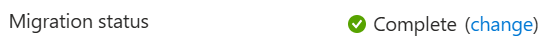
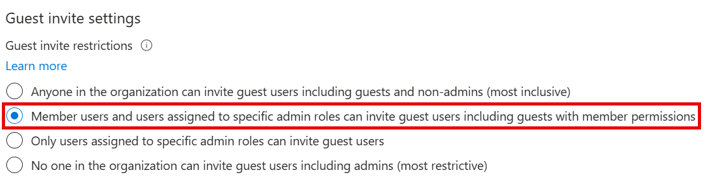
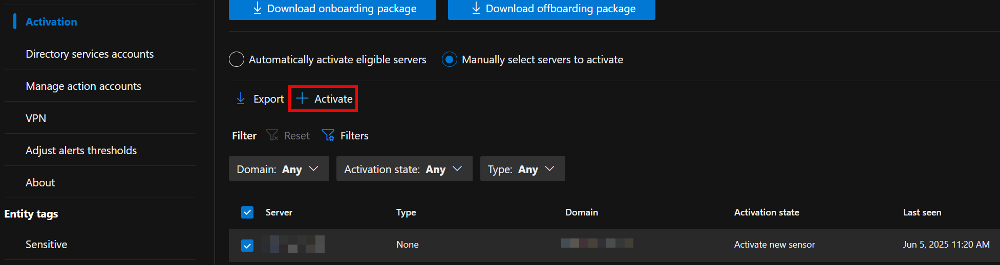
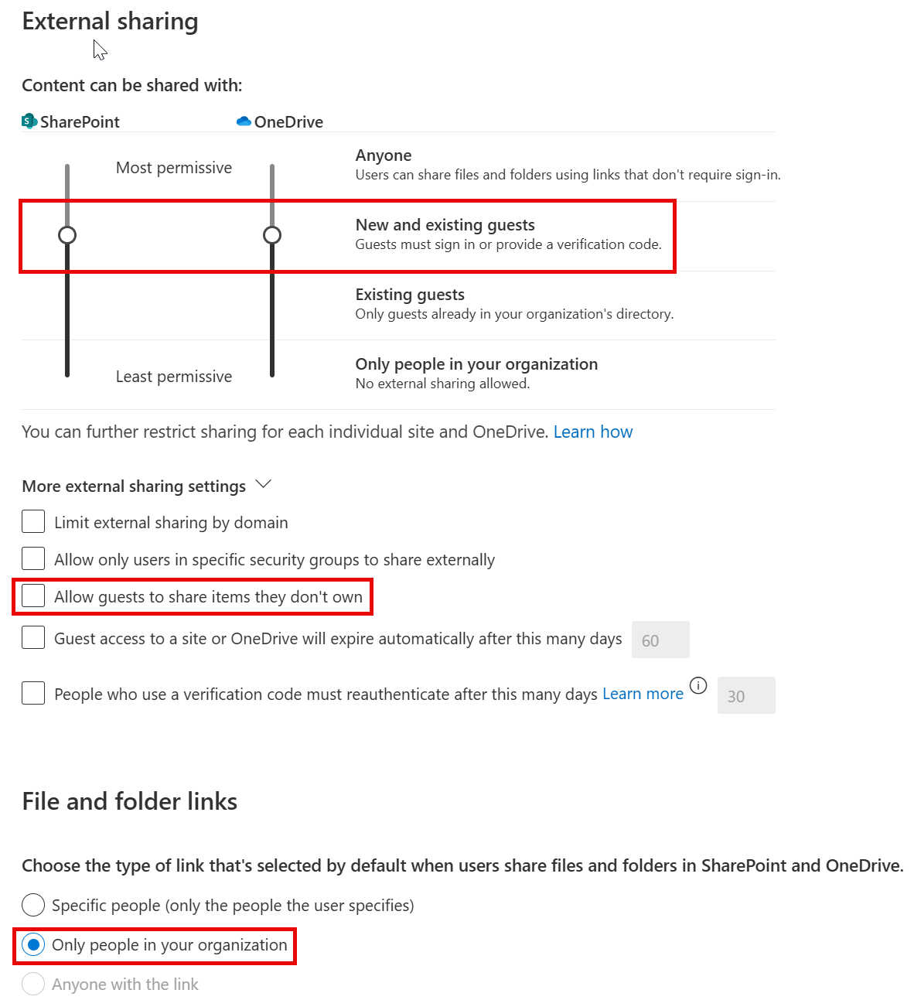

Fresh Tenant Setup
These are the steps I typically take to set up a fresh M365 E5 tenant.
Work in Progress
This is very much a continuous work in progress. I publish changes as I go. Screenshots might be out of date.
Use at your own risk
These are my personal steps. This should not be construed as official guidance. Always refer to the official Microsoft documentation available at learn.microsoft.com
Entra
Entra Cloud Sync
Cloud Sync is the lightweight replacement for AAD Connect. Follow the instructions in the Docs link for a step-by-step example for a single forest install.
Emergency Access Accounts
Follow the current recommendations here to set up two EEAs.
Hybrid Cloud Trust
Create EntraID Kerberos Server
# Install the AzureADHybridAuthenticationManagement module
Install-Module -Name AzureADHybridAuthenticationManagement -AllowClobber
# Specify the on-premises Active Directory domain. A new Azure AD
# Kerberos Server object will be created in this Active Directory domain.
$domain = "contoso.com"
# Enter a UPN of an Azure Active Directory global administrator
$userPrincipalName = "admin@contoso.com"
# Enter a domain administrator username and password.
$domainCred = Get-Credential
# Create the new Azure AD Kerberos Server object in Active Directory
# and then publish it to Azure Active Directory.
# Open an interactive sign-in prompt with given username to access the Azure AD.
Set-AzureADKerberosServer -Domain $domain -UserPrincipalName $userPrincipalName -DomainCredential $domainCred
# Verify server
Get-AzureADKerberosServer -Domain $domain -DomainCredential $domainCred -UserPrincipalName $userPrincipalName
Id : 17530
UserAccount : CN=krbtgt_AzureAD,CN=Users,DC=contoso,DC=com
ComputerAccount : CN=AzureADKerberos,OU=Domain Controllers,DC=contoso,DC=com
DisplayName : krbtgt_17530
DomainDnsName : contoso.com
KeyVersion : 27591
KeyUpdatedOn : 10/13/2022 9:23:43 PM
KeyUpdatedFrom : CONTOSO-DC-01.contoso.com
CloudDisplayName : krbtgt_17530
CloudDomainDnsName : contoso.com
CloudId : 17530
CloudKeyVersion : 27591
CloudKeyUpdatedOn : 10/13/2022 9:23:43 PM
CloudTrustDisplay :Device Settings
- Disable adding GA to local admin.

App Registrations
MS Graph PowerShell SDK
To enable use of the MS Graph PowerShell SDK, create an app registration for app-only for use with the SDK.
- Create the app registration.

- Grant application permissions for Microsoft Graph that are necessary for your use cases.
- I prefer to do app consent cert-based authentication. Here’s a couple of links explaining the process:
Identity Protection
Self Service Password Reset
- Enable Self service password reset
- Target a group that excludes service accounts. Easiest way to do this is with a dynamic group. Example rule:
(user.displayName -ne "On-Premises Directory Synchronization Service Account") and (user.userPrincipalName -notStartsWith "svc")
- Target a group that excludes service accounts. Easiest way to do this is with a dynamic group. Example rule:
- Enable Password writeback in On-premises integration

Authentication Methods
Policies
For methods, enable
- Passkeys
- Authenticator

- Temporary Access Pass
Authentication Methods Migration
Optional - may not be necessary in newer tenants. If you see Migration status: Complete, you can skip this.

- Disable verification options in the legacy MFA settings portal

- Disable Authentication methods in SSPR Authentication Methods

- Migrate to the Converged Authentication Methods Policy

User Settings
- Toggle Off
- Users can register Applications
- Show keep user signed in
- Toggle On
- Restrict non-admin users from creating tenants
- Restrict access to Entra ID administration portal

User Feature Settings
- Select All for Users can use preview features for My Apps
External Collaboration Settings
🔗 Portal
- Change guest invite settings to
Member users and users assigned to specific admin roles can invite guest users including guests with member permissions

Device Settings
Cloud LAPS
- Enable LAPS

Enterprise State Roaming
- Enable Enterprise State Roaming

Identity Protection
Multifactor authentication registration policy
- Create a EntraID group called Service Accounts, add any service accounts that should be excluded from MFA registration
- Enable the policy, targeting all users and excluding the group you just created.

Diagnostic Settings
Prior to doing so, create a Log Analytics workspace and add Sentinel to it.
- Enable all diagnostic settings to log to your Sentinel log analytics workspace

Global Secure Access
Enable GSA
Click Activate to enable GSA in your tenant

Internet Access
- Enable the Microsoft Profile

- Download the GSA Client and deploy to Windows devices.
Intune
Tenant Administration Settings
Windows Data Connector

Defender for Endpoint Connector
You need to enable the Defender side first.

Windows Autopatch
- Run the prereq check. You’ll see an advisory for co-management, this can be safely disregarded.

- Grant admin access for Microsoft

- Provide Admin contact info.
- Add devices to the the default autopatch group
Windows Autopatch Device Registration - Wait a few minutes, then ensure the devices show in the Windows Autopatch devices here
- Put a couple of devices in the Test ring by clicking on the device name, then selecting Device Actions -> Assign Ring. In the flyout, choose the Test ring

Applications
Windows
Add app -> Microsoft 365 Apps for Windows 10 and Later. Assign to all devices.


Devices
Windows Automatic Enrollment
- Set MDM and MAM user scopes to all

Windows Autopilot
Follow this guide: Overview for Windows Autopilot device preparation user-driven Microsoft Entra join in Intune | Microsoft Learn
Prereqs:
- Create Entra Groups
- Automatic Enrolment Set
- Enrolled devices. Windows Autopilot device preparation devices
- Set App ID f1346770-5b25-470b-88bd-d5744ab7952c as the owner.
- Targeted Users - Windows Autopilot device preparation users
- Create/update an Office deployment, target the device group created above.
Create a device prep policy

iOS Enrollment
User-driven iOS enrollment is a two step process - the push certificate and the enrollment profile.
Configure Apple MDM Push Certificate

Enrollment Profile
!!! info “Native iOS enrollment” There’s this nifty-keen account driven user enrollment available in iOS 15+, but you’ll need a web server to serve up the json file Apple expects.
- Configure an enrollment profile
- Create a profile that allows user choice of type of device (corporate vs user), target all users.

- Create a profile that allows user choice of type of device (corporate vs user), target all users.
Supervised iOS Enrollment with Apple Configurator
There are two options for Apple Config profile - with user affinity and without. For testing, enrollment with User Affinity with the Company Portal app mimics how devices might be distributed to end users.
- Create a new Enrollment Profile. On the settings step, select:
User affinity:
Enroll with User AffinitySelect where users must authenticate:Company Portal - Export the profile you just created. Copy the URL.

- Create a csv file with the serial numbers of iPads you wish to enroll.
Serial number,device details - Upload the csv file in the portal under Devices. Assign the profile you just created.

- In Apple Configurator, choose Settings -> Servers. Click + to add a server. Add the URL you copied from step 2.

- Connect a device, and at the main screen, click Prepare. Leave the default options unchanged.

- Choose the Intune MDM server defined in Step 5.

- Skip Apple Business Manager sign-in if prompted. At the Organization screen select a previous org or create a new one. This is shown in the settings app in iOS.
- Choose to generate a new supervision Identity or reuse an existing one.
- Choose which steps to display in the Setup Assistant. Click Prepare to start the process.
Android Enrollment
User-driven Android enrollment is a two step process - the managed Google Play account linking and the enrollment profile.
Managed Google Play Account Linking

MacOS Enrollment
As with MDE for MacOS, this tends to change, so be sure to check the docs for the most recent steps.
:material-head-sync: tl;dr
- Create a MacOS enrollment profile here if you didn’t for iOS yet - they’re shared between iOS and MacOS.
- Download the Company Portal app for MacOS from here and deploy the company portal app as a MacOS LOB app

{kind=link}
MacOS Platform SSO
Use the instructions here as a guide.
tl;dr Use the settings below in a config profile to deploy platform sso with the following options:
- Password authentication which syncs the Entra password with the local account password
- Create new users as admins

Endpoint security
Windows
- Endpoint Detection and Response
- Create a new EDR policy targeting Windows. Target all devices.


- Create a new EDR policy targeting Windows. Target all devices.
- Antivirus
- Create a new Microsoft Defender Antivirus profile

- Enable Network Protection in Block mode. Target all devices.

- Create a new Microsoft Defender Antivirus profile
MacOS
Deploying MDE on MacOS is a multi-step manual process, and changes occasionally. Refer to Intune-based deployment for Microsoft Defender for Endpoint on Mac - Microsoft Defender for Endpoint | Microsoft Learn for the most current steps.
:material-head-sync: tl;dr
If you want a sample combined deployment, I’ve combined mobileconfig files here to set the following settings
-
AutoUpdate enabled, broad channel
-
Network protection set to block
-
All other required mobileconfig settings, such as full disk access, etc.
-
Deploy the combined profile
- Create a device configuration profile for macOS devices using a custom template

- For configuration settings, upload the mobileconfig from above. Target device channel.
- Target all MacOS devices
- Create a device configuration profile for macOS devices using a custom template
-
Deploy MDE
- Deploy the MDE packageMDE App in Intune
-
Deploy the Onboarding Package
-
Download the MDM/Intune onboarding package from Defender XDR

-
Deploy via Intune as a Custom Config template

Security Baselines
- Create a new Microsoft Defender for Endpoint Baseline policy and target all devices.

Account Protection (LAPS)
-
Enable LAPS in the portal
-
Create a Windows LAPS profile and apply to all devices.


M365 Defender
XDR
- Enable unified SIEM and XDR.

Email & collaboration
- Peset Security Configuration Policies
-
Enable Standard Protection Preset Policies.


-
MDCA
- System
- IP Address Ranges
- If you have IP Ranges as Trusted Named Locations in EntraID, add them as Custom IP Address Ranges in MDCA with the category of Corporate

- If you have IP Ranges as Trusted Named Locations in EntraID, add them as Custom IP Address Ranges in MDCA with the category of Corporate
- IP Address Ranges
- Cloud Discovery
- Defender for Endpoint
- Enforce App Access:
On
- Enforce App Access:
- User Enrichment
- Enrich discovered identities:
On
- Enrich discovered identities:
- Defender for Endpoint
- Information Protection
- Microsoft Information Protection
- Enable automatically scan new files
- Enable scanning protected files. You’ll need to go through the OAUTH grant process.

- Files
- File monitoring
- Microsoft Information Protection
- Connected Apps
- App Connectors
- Click Connect an app, choose Microsoft 365 from the list. Select all options.

- Click Connect an app, choose Microsoft 365 from the list. Select all options.
- App Connectors
- Conditional access app control
- Edge for Business protection:
On
- Edge for Business protection:
- App governance
- Service Status:
On
- Service Status:
Defender for Endpoint
Enable the following Advanced Features:
- Enable EDR in block mode:
On - Allow or block file:
On - Hide potential duplicate device records:
On - Custom network indicators:
On - Tamper protection:
On - Show user details:
On - Skype for business integration:
On - Microsoft Defender for Cloud Apps:
On - Web content filtering:
On - Device discovery:
On - Default to streamlined connectivity when onboarding devices in Defender portal:
On - Apply streamlined connectivity settings to devices managed by Intune and Defender for Cloud:
On - Live Response:
On - Live Response for Servers:
On - Share endpoint alerts with Microsoft Compliance Center:
On - Microsoft Intune connection:
On - Authenticated telemetry:
On - Preview features:
On
Defender for Identity
-
Activation (MDE based agent)
- Select the servers with MDE deployed and click Activate

- Select the servers with MDE deployed and click Activate
-
Sensors
- Click +Add Sensor, and download the installer and copy the Access key

- Install the sensor on all DCs in AD. Use the access key when prompted by the installer.

- Click +Add Sensor, and download the installer and copy the Access key
-
Active Directory
- Configure Event Collection via GPO
- Configure Group Managed Service Account account
-
On the first DC
-
Create root KDS key
Add-KdsRootKey -EffectiveTime ((get-date).addhours(-10)) -
Purge kerberos tickets
klist purge -li 0x3e7- Create the gMSA
New-ADServiceAccount accountname -PrincipalsAllowedToRetrieveManagedPassword "Domain Controllers" -DNSHostName accountname.domain.contoso.com- Install the gMSA on the DC
Install-ADServiceAccount -Identity 'accountname'- On the other DCs, purge kerberos tickets and install the service account
- Add the gMSA in the portal

- Add the gMSA in the portal
-
-
Purview
Audit
-
Enable Auditing
-
With the ExchangeOnlineManagement module in PS5/PS7+
Enable-OrganizationCustomization Set-AdminAuditLogConfig -UnifiedAuditLogIngestionEnabled $true
-
-
Make certain MailItemsAccessed is recorded.
Device Onboarding
- Enable Windows and Mac device onboarding. This requires MDE.
Information Protection
Enable labeling for Protected content & PDFs
📖 Enable Sensitivity Labels for Protected Content 📖 Enable labeling support for PDFs
- Enable labeling for Protected content & PDFs
-
Using the SharePoint Module in PowerShell 5
connect-sposervice -url 'https://<tenant>-admin.sharepoint.com/' Set-SPOTenant -EnableAIPIntegration $true Set-SPOTenant -EnableSensitivityLabelforPDF $true
-
Enable Labeling for Containers
In a fresh tenant, there will not be any EntraID group settings configured, so those need to be created. Then enable labeling for containers. After that, you can enable the label sync.
-
With the Graph SDK in PS7+
Connect-MgGraph -Scopes "Directory.ReadWrite.All" $TemplateId = (Get-MgBetaDirectorySettingTemplate | where { $_.DisplayName -eq "Group.Unified" }).Id $params = @{ templateId = "$TemplateId" values = @( @{ name = "EnableMIPLabels" value = "True" } ) } New-MgBetaDirectorySetting -BodyParameter $params -
With the ExchangeOnlineManagement module in PS5/PS7+
Connect-IPPSSession Execute-AzureAdLabelSync
Enable co-authoring for Encrypted Files
This can be done in the portal, or via PowerShell.
-
With the ExchangeOnlineManagement module in PS5/PS7+
Connect-IPPSSession Set-PolicyConfig -EnableLabelCoauth:$true
Implement Secure by Default Labeling
Rationale and planning guidance are here . I’ve changed some of the configurations to more closely match what I’ve seen done with customers.
Label Definitions
Personal
Name & Display Name: Personal
Description for users: Non-business data, for personal use only
Scope: Files & other data assets, Emails, Meetings
Control access: No\
Content marking: No\
Auto-labeling: Off
Public
Name & Display Name: Public
Description for users: Organization data that's specifically prepared and approved for public consumption.
Scope: Files & other data assets, Emails, Meetings
Control access: No
Content marking: No
Auto-labeling: Off
Groups & Sites Protection Settings:
- Privacy and User Access:
Public or Private (depending on needs) - External user access:
Off
General
Name & Display Name: General
Description for users: Business data that isn't intended for public consumption. However, this can be shared with external partners, as required.
Scope: Files & other data assets, Emails, Meetings
Control access:
- Assign permissions:
Now - Access expiration:
Never - Offline access:
Always - Permissions:
- Users and Groups:
All users and groups in your organization - Permissions:
Editor (Co-Author)Content marking:
- Users and Groups:
- Footer:
Classified as ConfidentalAuto-labeling:OffGroups & Sites Protection Settings: - Privacy and User Access:
Public or Private - External user access:
Off
Confidential\All Employees
Name: Confidental - All Employees
Display Name: All Employees
Description for users: Sensitive business data that could cause damage to the business if shared with unauthorized people. Examples include contracts, security reports, forecast summaries, and sales account data.
Scope: Files & other data assets, Emails, Meetings, Groups & Sites
Control access:
- Assign permissions:
Now - Access expiration:
Never - Offline access:
Always - Permissions:
- Users and Groups:
All users and groups in your organization - Permissions:
Editor (Co-Author)Content marking:
- Users and Groups:
- Footer:
Classified as ConfidentialAuto-labeling:OffGroups & Sites Protection Settings: - Privacy and User Access:
Private - External user access:
Off
Confidential\Specific People
Name: Confidential - Specific People
Display Name: Specific People
Description for users: Confidential data that can be shared with trusted people inside and outside your organization. These people can also reshare the data as needed.
Scope: Files & other data assets, Emails, Meetings
Control access:
- Assign permissions:
Let users decide- Outlook:
Encrypt Only - Word, Excel, PowerPoint:
PromptContent marking:
- Outlook:
- Footer:
Classified as ConfidentialAuto-labeling:Off
Confidential\Internal exception
Name: Confidential - Internal exception
Display Name: Internal exception
Description for users: Confidential data that doesn’t need to (or cannot) be encrypted. Use this option with care and appropriate business justification.
Scope: Files & other data assets, Emails, Meetings
Content marking:
- Footer:
Classified as ConfidentialAuto-labeling:Off
Highly Confidential\All Employees
Name: Highly Confidential - All Employees
Display Name: All Employees
Description for users: Sensitive business data that could cause damage to the business if shared with unauthorized people. Examples include contracts, security reports, forecast summaries, and sales account data.
Scope: Files & other data assets, Emails, Meetings, Groups & Sites
Control access:
- Assign permissions:
Now - Access expiration:
Never - Offline access:
Always - Permissions:
- Users and Groups:
All users and groups in your organization - Permissions:
Editor (Co-Author)Content marking:
- Users and Groups:
- Footer:
Classified as Highly ConfidentialAuto-labeling: - Content Contains:
All Credential Types - Instance Count:
1 to many - Confidence:
HighGroups & Sites Protection Settings: - Privacy and User Access:
Private - External user access:
Off
Highly Confidential\Specific People
Name: Highly Confidential - Specific People
Display Name: Specific People
Description for users: Highly confidential data that requires protection and can be viewed only by people you specify and with the permission level you choose.
Scope: Files & other data assets, Emails, Meetings
Control access:
- Assign permissions:
Let users decide- Outlook:
Encrypt Only - Word, Excel, PowerPoint:
PromptContent marking:
- Outlook:
- Footer:
Classified as Highly ConfidentialAuto-labeling:Off
Highly Confidential\Internal exception
Name: Highly Confidential - Internal exception
Display Name: Internal exception
Description for users: Highly Confidential data that doesn’t need to (or cannot) be encrypted. Use this option with care and appropriate business justification.
Scope: Files & other data assets, Emails, Meetings
Content marking:
- Footer:
Classified as ConfidentialAuto-labeling:Off
Label Publishing Policies
Deploy the above labels to users
Default Labels:
- Documents:
Confidential/All Employees - Emails:
General- Inherit label from attachments:
Automatically apply
- Inherit label from attachments:
Additional Controls
- Consider setting SharePoint files to be sensitive by default. Guest access to newly added content is restricted until it undergoes a sensitive content scan and applicable DLP policies with content-based conditions are enforced.
- Use labels to set the default sharing link for SharePoint sites to
People in your organization.
DLP
Settings
Endpoint DLP
- Advanced classification scanning and protection:
On - Advanced label-based protection for all files on devices
On - Setup Evidence collection for file activities on devices:
On- Storage type:
Microsoft managed
- Storage type:
- Browser and domain restrictions to sensitive data
- Full URL for ‘File copied to cloud:
On
- Full URL for ‘File copied to cloud:
Analytics
- Activate analytics:
On
Just in time protection
- Locations to monitor:
Devices - Fallback action:
Block
MIP Scanner
Prerequisite
- Service account in AD, exclude from MFA registration and CAs
- SQL server for the scanner, as well as a windows server.
Deployment
- Create a Scanner Cluster

- Create a Content Scan Job. Be sure to disable any of the auto options - this will just be for scanning.

Exact Data Match
EDM SIT
- Create a new EDM SIT. Since I work in healthcare, I typically use Synthea to generate patient records. We do have sample industry files you can use.
- Make note of the datastore name when you finish the EDM wizard. You’ll need it for the EDM uploader.
EDM Uploader Tool
- Create a service account for the EDM upload agents to run as.
- Create a EntraID security group named
EDM_DataUploadersand add the service account to it. - Install the EDM upload tool to
c:\EDM - Place sample data in
c:\EDM\Data - Save the schema
.\EdmUploadAgent.exe /SaveSchema /DataStoreName your_data_store_name /OutputDir c:\edm\data - Create
c:\EDM\hash - Upload the data
.\EdmUploadAgent.exe /uploaddata /datastorename your_data_store_name /datafile C:\edm\data\your_data.csv /hashlocation c:\edm\hash /schema C:\edm\data\your_data_store_name.xml /allowedbadlinespercentage 5
Insider Risk Management
!!! Warning “Work in Progress” This section is not complete.
Roles
- Add your account to the
Insider Risk Managementrole. - Create a role group called
Data Connector Admins, add theData Connector Adminrole to it and add your account to the role group.
Browser Activity Plugins
- Deploy the Edge profile via Intune as described here
- Deploy the Chrome profile via Intune as described here
Settings
- Analytics
- Insights at tenant & user level:
On
- Insights at tenant & user level:
- Data sharing
- Share user risk details with other security solutions:
On
- Share user risk details with other security solutions:
- Policy indicators
- Select all indicators under the following categories
- Office
- Device
- Microsoft Defender for Cloud Apps
- Cumulative exfiltration detection
- Risk score boosters
- Generative AI Apps
- Microsoft Copilot Experiences
- Microsoft Entra
- Risk Detection indicators
- Select all indicators under the following categories
Analytics
- Toggle analytics on
Policy Indicators
- Select all indicators under the following categories
- Office
- Device
- Microsoft Defender for Endpoint
- Risky Browsing
- Microsoft Defender for Cloud Apps
Adaptive Protection
- Turn on adaptive protection with the quick setup option

- Wait for that to process. Once complete, go back and enable Adaptive Protection under Adaptive Protection settings

Polices
- Create a Data Leaks policy from the template

- Target all users
- Choose not to prioritize content.

- For triggering events, choose
User performs an exfiltration activity - For thresholds, choose
Apply built-in thresholds. - For indicators, leave the default ones checked.
DSPM for AI
Under Get started in the portal, click on Extend your insights for data discovery, then create the two policies from the flyout.
- DSPM for AI - Detect when users visit AI sites
- DSPM for AI - Detect sensitive info added to AI sites
Under Recommendations, create the sample policies from all recommendation actions that include policies.
Communication Compliance
- Grant Teams meeting recording access.
eDiscovery
- Create a Role Group named EDiscovery Administrators, assign it the
SharePoint
- Enable the SharePoint Entra B2B Integration
In Windows PowerShell 5
connect-sposervice -url '<tenant>.-admin.sharepoint.com'
Set-SPOTenant -EnableAzureADB2BIntegration $true- Change Sharing settings from the insecure defaults
- Move the external sharing sliders to Content can be shared with:
New and existing guests - Uncheck
Allow guests to share items they don't own
- Move the external sharing sliders to Content can be shared with:
- Change File and folder default links to:
Only people in your organization